How do schools make a decision for their students?
They measure — and they ask.
2,895
data points collected for that child.
Schools see every data point in one simple dashboard.
Easy to use, easy to navigate — built for teachers, not analysts.
Every skill lands at one of three levels:
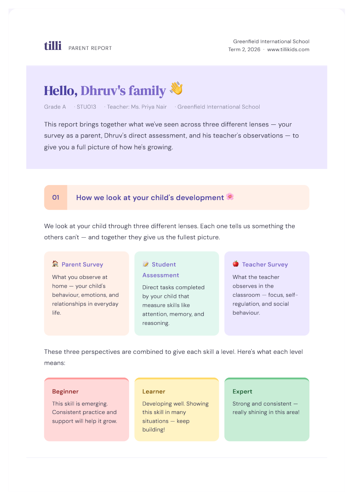
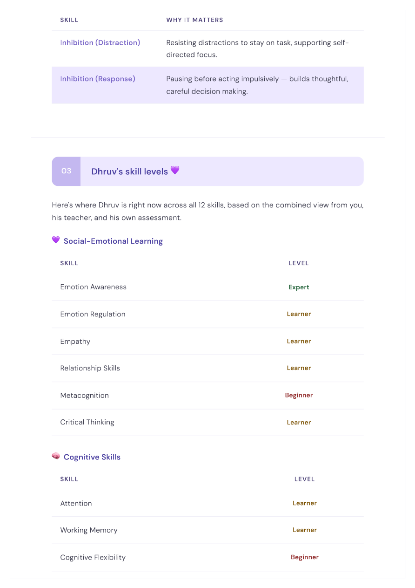
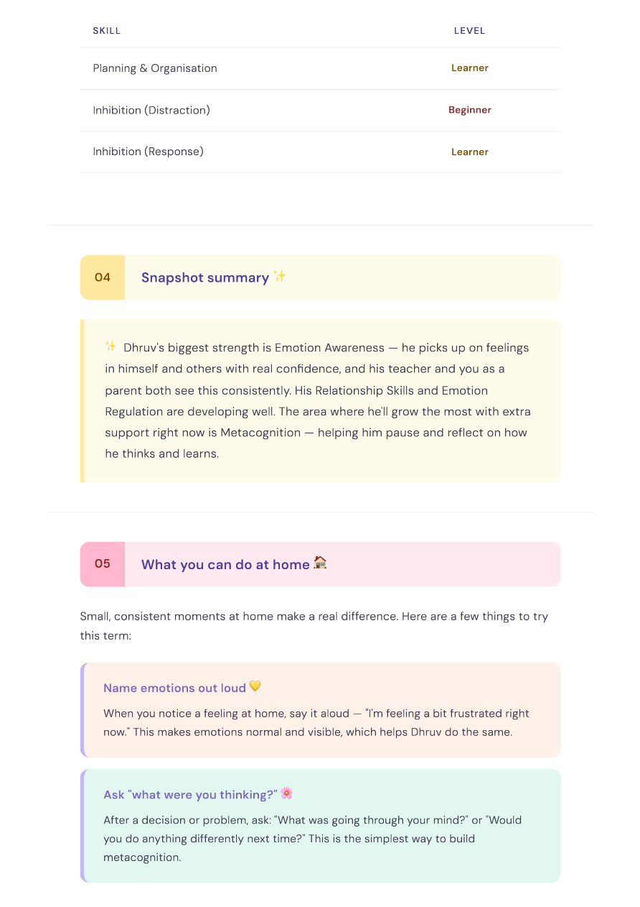
Teachers share reports parents love to receive.
Term by term: strengths, growth areas, and small things to try at home — for every child.
Book a demoEvery data point comes from the 3 people who matter most.
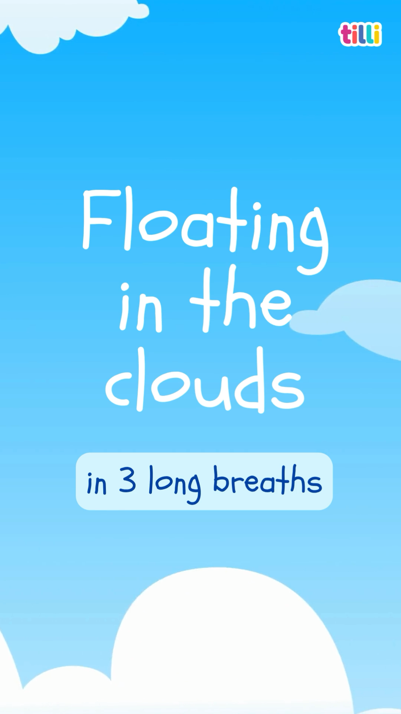
Get a 360° view of the student.
12 foundational skills — measured from every side, term after term.
Every child walks into middle school developmentally on track.
Not a promise — a measurement. See exactly where each child stands, term by term, and what to do about it.
Any AI can answer. Only Tilli knows your student.
The same question, asked two ways. One answer is for any child. One is for this child.
30+ schools are already with us.
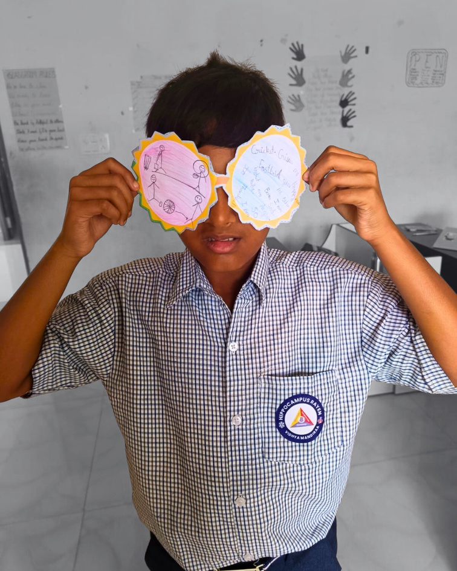
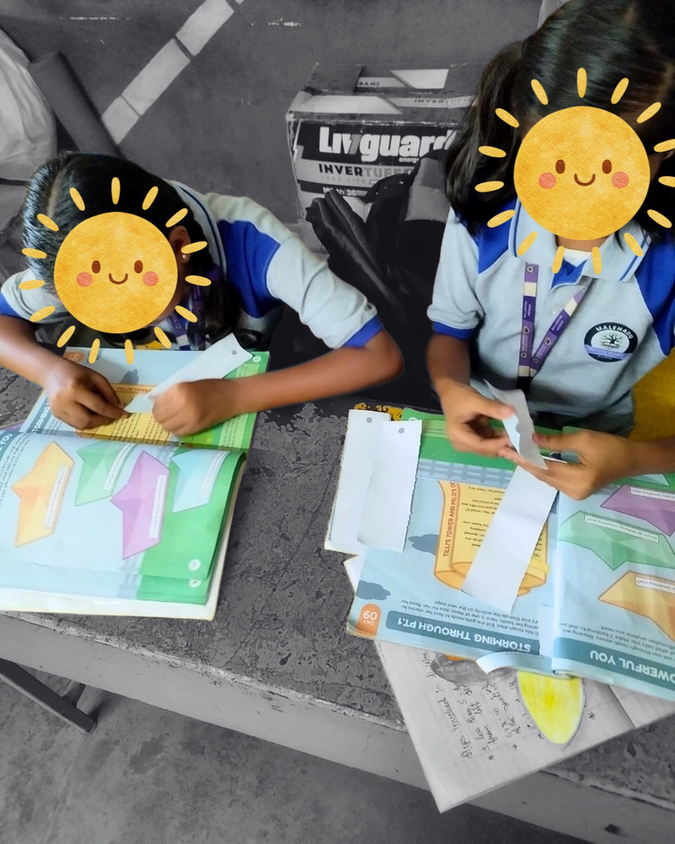
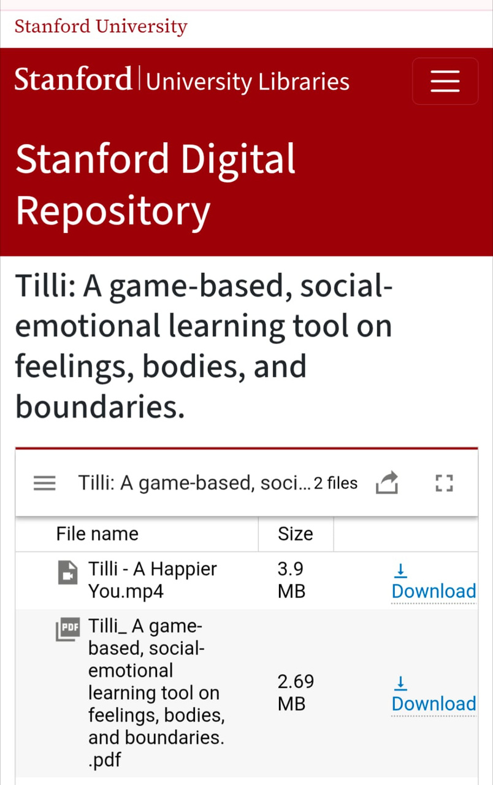
Measure. Ask. Intervene.
In the first weeks, every child is assessed across all 12 skills — teacher observation, parent report, and direct tasks. Repeated three times a year, so growth is visible, not guessed.
Teachers ask about a child or a class and get lesson plans, behaviour guidance, and that child's own data — in the middle of a school day, in seconds.
36 weeks of play-based lessons for every class — Feelings Time workbooks, Teacher's Guidebooks, and the SEL Teaching Kit. 30 minutes a week. No new period, no extra prep.
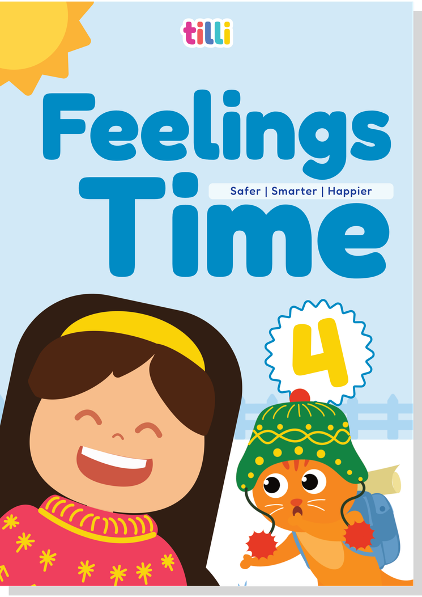
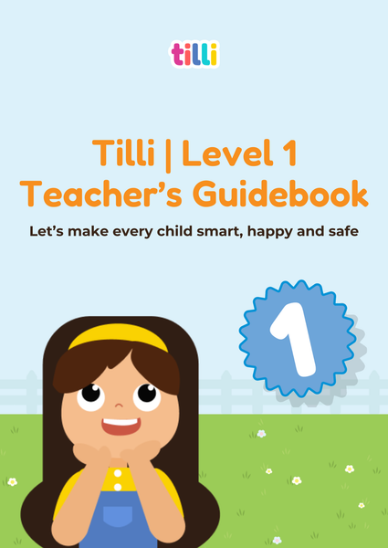
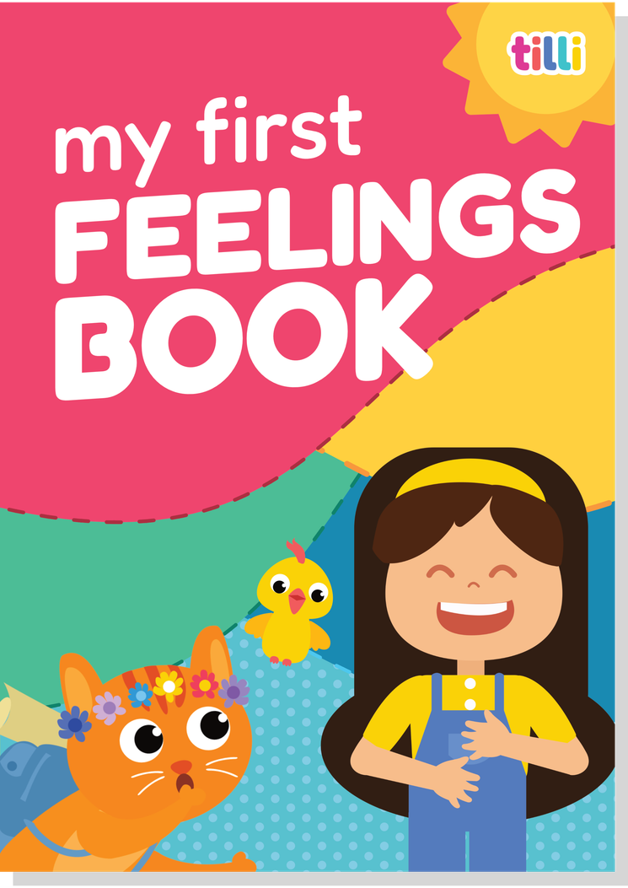